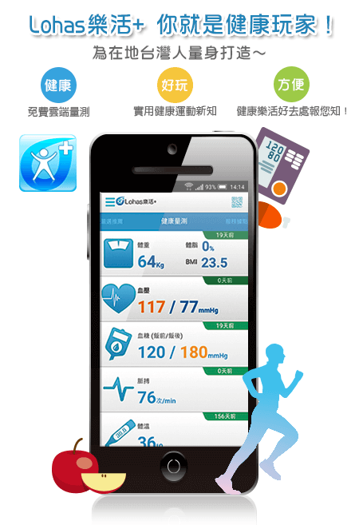

Lohas 樂活 + 已經在 App store 和 Google play 上架囉！
發表日期：2015 / 10 / 22

快加入為台灣人量身打造「健康」、「好玩」、「方便」的健康平台～
健康生活，當然「找最近的啊」！原來家裡、公司附近有那麼多好玩又健康的樂活去處！
預防勝於治療，取得「免費雲端健康卡」、使用所有雲端量測站
什麼？還有免費健康評估、風險提醒小建議和優惠好康券！別懷疑，這都是真的！
Lohas 樂活 + 特色：
直覺：
指尖輕輕左右滑動，健康新知、樂活服務據點、健康量測紀錄都在一指間！
方便：
現在使用悠遊卡、桃園市民卡都可以註冊成為個人雲端健康卡，一卡通用所有「樂活+」雲端健康量測站！
健康：
嚴選推薦六大健康主題，涵蓋減重塑身、運動健身、銀髮照護、美妝保養、健康新知、營養保健，及個人化樂活嚴選推薦商品！
優惠：
參加各地區、各服務店家舉辦的量測活動，即可獲得超優惠票卷。（各項活動請參見 FB-微運動 X 愛健康粉絲頁）
Lohas 樂活+ 邀請您一起健康生活，馬上加入全新、免費的健康生活平台！
還有更多：
** 樂活玩家 **
原來家附近有這麼多好玩的：雲端量測點、健康玩樂、營養/運動專業諮詢、運動中心、小公園、健康美食、籃球場，還有運動社團可以交朋友！
** 嚴選推薦 **
最新健康與運動話題，同時嚴選樂活+推薦的「會員獨享」最新、最熱、超優惠健康商品。
** 健康天使 **
健康指數：健康紀錄都在這裡，善用它讓自己更健康吧！
健康問卷：填寫健康問卷，APP 幫你做三高、代謝症候群風險評估
沒注意的健康風險，APP 會分析後自動提醒我，還會建議最適合、最優惠的健康商品，為健康加分原來不難
** 訊息通知 **
一陣子沒有關心健康了嗎？樂活 + 會依照您的健康狀況提醒您，做您最棒的健康管家。參加活動還可收到優惠好康票券喔～
** 打卡 **
找到附近的雲端服務站了嗎？馬上前往打卡，開始健康樂活吧！
我們是一個對生命有熱情與願景的團隊，希望您更健康、幸福！因此我們致力於整合健康產業、政府資源，提供最棒的健康資訊與服務給您。
如果有任何相關建議，請隨時與我們聯絡。